October 2023
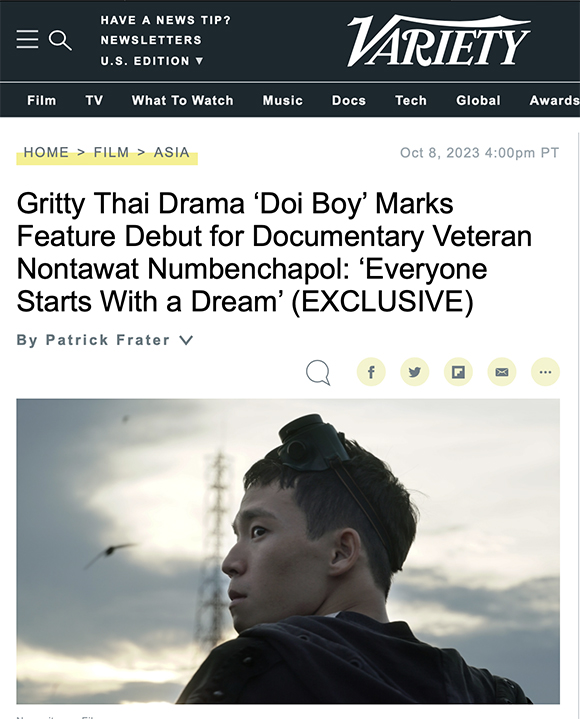
DOI BOY on VARIETY
Gritty Thai Drama ‘Doi Boy’ Marks Feature Debut for Documentary Veteran Nontawat Numbenchapol: ‘Everyone Starts With a Dream’ (EXCLUSIVE). Read the full article by Patrick Frater.
November 2023
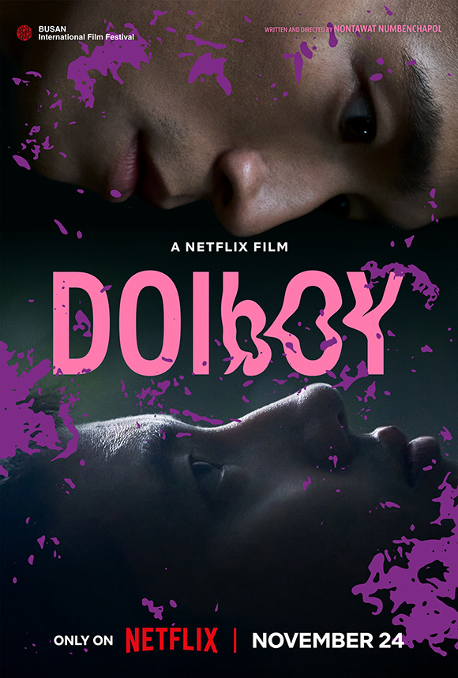
On 2023 November 24th, you can watch “DOI BOY” global release on NETFLIX. This is a new experience in the life of my filmmaking, where everyone can easily watch it anywhere in the world.
I apologize to the various film festivals that have been invited and had to decline, and to the audience who were expecting to watch it in movie theaters. The best and most suitable place for “DOI BOY” is on NETFLIX. I’m glad to hear feedback, both compliments and criticism.
October 2023

Gritty Thai Drama ‘Doi Boy’ Marks Feature Debut for Documentary Veteran Nontawat Numbenchapol: ‘Everyone Starts With a Dream’ (EXCLUSIVE). Read the full article by Patrick Frater.
October 2023
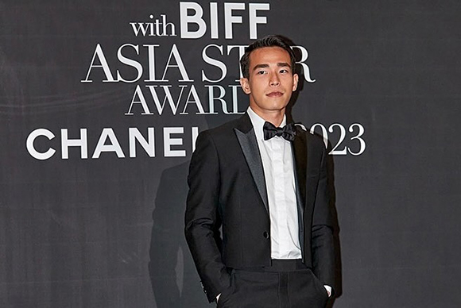
Congratulations! Awat Ratanapintha, from the movie ‘DOI BOY,’ received the Rising Star Award at the 28th Marie Claire with BIFF Asia Star Awards 2023, held during the 28th Busan International Film Festival (BIFF), October 4–13, 2023.
October 2023
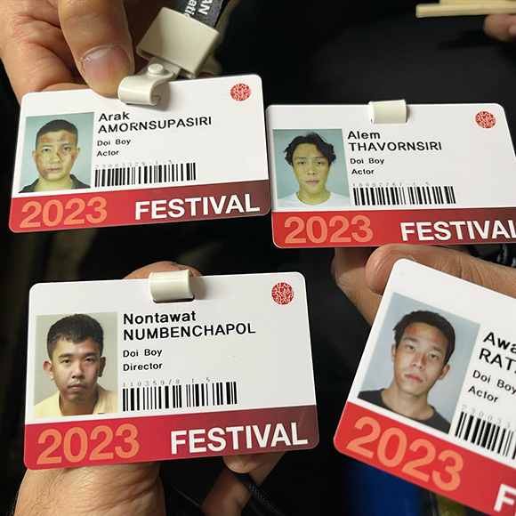
Watching DOI BOY on the big screen at Busan International Film Festival (In competition, Jiseok section) was a special and more valuable moment than any my film before. It marked a transitional phase, entering new territories in both personal and era aspects.
A big thank you to everyone who made DOI BOY happen. If, in the near future, anyone watches and has feedback, whether positive or negative, please feel free to share it.
June 2023
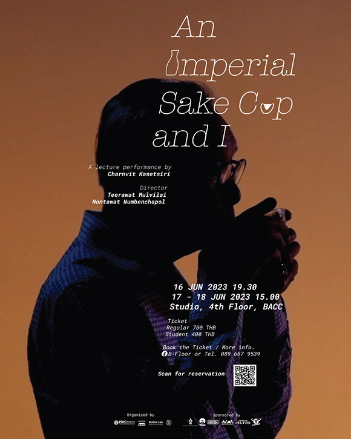
An Imperial Sake Cup and I is a lecture-performance by Dr. Charnvit Kasetsiri, a renowned historian and specialist in Southeast Asia Studies, and recipient of the Fukuoka Academic Prize in 2012. Charnvit draws a connection between his relationship with the Japanese army in his hometown Nong Pla Duk, Ban Pong, during World War II.
He traces personal and micro-narratives to reflect objects and memories as well as his witnessing of the global social transformation from the Japanese presence in Thailand, the Vietnam War, and the 1970s student uprising in Thailand. Only 3 performances at BACC, 16–18 June 2023.
April 2023
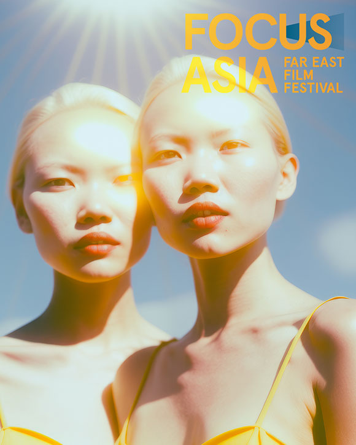
DOI BOY heads to Udine Far East Film Festival — Focus Asia, Far East in Progress. The film is currently in post-production and was incubated through the EAVE Ties That Bind workshop in 2017.
March 2023

Jim Thompson Art Center presents exhibitions that lead us to explore and rethink the Cold War era in Thailand and its aftermaths through Thai and international artists with various art forms. This exhibition presents absent stories in grand history and invites us to think about the possibility of alternative futures.
February 2023
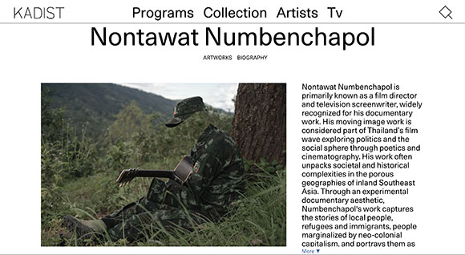
The series of prints titled Mr. Shadow engages with the history of and current state of militarization in Thailand. Each print features an invisible person, their silhouette only outlined by the military fatigues that they wear.
Photographed on a mountain range at the border between Shan State in Myanmar and Northern Thailand, the series epitomizes the haunting presence and effects of a militarized modernity and nation-state building across the region.
October 2022
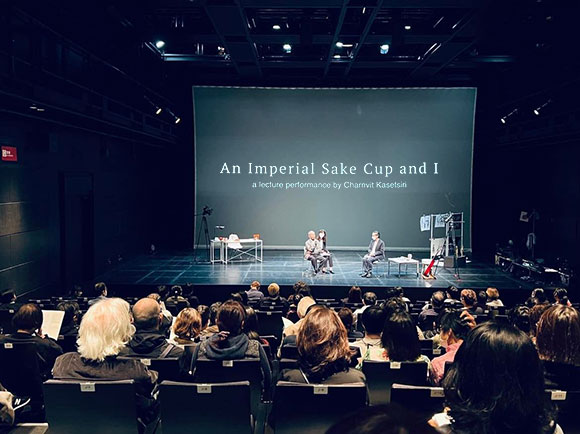
Charnvit traces his personal history starting from the commemorative sake cup he received when the Crown Prince (later the Heisei Emperor Akihito) and his wife paid an official visit to Thailand in 1964, and goes on to outline events that ushered in social transformation around the world. The Japan event is the first overseas staging of this piece, which premiered in Chiang Mai in 2020.
October 2022

Based on interviews the journalist and writer Jürgen Berger conducted with trans* people in Thailand and Germany between 2017 and 2022, the production explores the gap in society which these people inhabit in both countries.
For this production by Jarunun Phantachat and the German director Anna-Elisabeth Frick, the video artist Nontawat Numbenchapol has evolved an entirely individual visual language.
June 2014
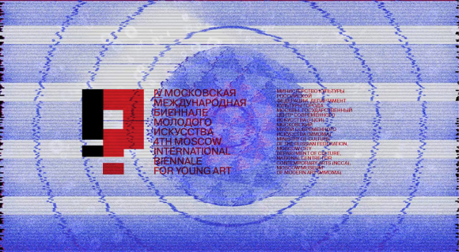
Shown in the group exhibition “A Brief History of Memory” at The 4th Moscow International Biennale for Young Art, Strategic Projects.
June 2014

Screening at Meta House, Phnom Penh, Cambodia.
June 2014

Screening, in competition, at Human Rights Human Dignity International Film Festival, Yangon, Myanmar.
June 2014

Screening, in competition, at Human Rights Human Dignity International Film Festival, Yangon, Myanmar.
May 2014

Screening at Green Film Festival in Seoul (GFFIS).
May 2014

A group show “Chapter 3, State of Being — New Video Art From Thailand” at XXX Gallery, Hong Kong.
April 2014

Selected for ChopShots documentary film festival, international competition, Jakarta, Indonesia.
April 2014

Screening at Seoul Independent Documentary Film & Video Festival.
April 2014

“It was the most impressive screening in my life, like a dream I’ve been imagining. Thank you everyone involved with this movie and everyone who made this screening happen. I was so happy I didn’t want to come back to the city.” — Nontawat Numbenchapol, Director
The premiere at Lower Klity village — where the documentary was shot — was accompanied by merit making for Karen ancestors and a discussion on the progress of Klity creek rehabilitation. Nontawat hopes the 16-year struggle of Klity villagers becomes an inspiration for people fighting for human rights and social justice.
February 2014
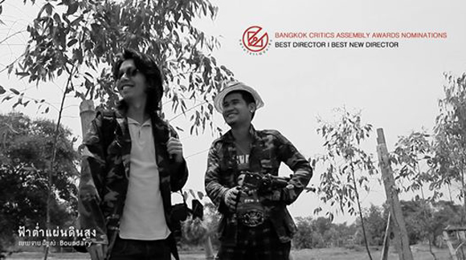
Received a Young Director award at the Bangkok Critics Assembly Awards, Thailand.
December 2013

Screening at Cambodia International Film Festival, in the “A Glimpse of Cambodia” documentaries section.
December 2013
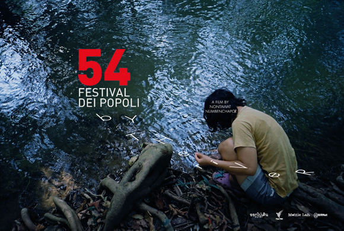
Screening at Festival dei Popoli, Florence, Italy, in the Far From Utopia section.
December 2013
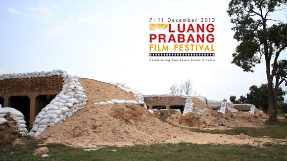
Showing at Luang Prabang Film Festival.
November 2013

Screening at Festival Film Dokumenter, Yogyakarta, Indonesia, in the No Bond, No Boundaries section.
November 2013
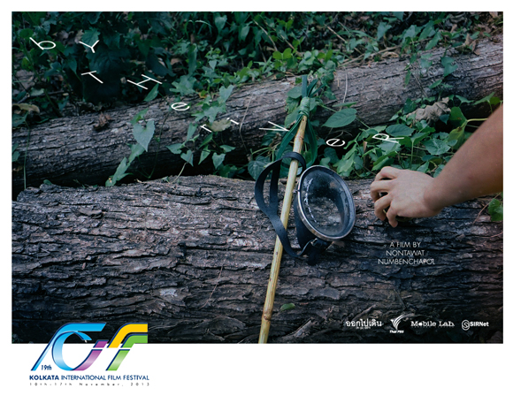
Screening at Kolkata International Film Festival, in the Focus: South East Asia section.
November 2013
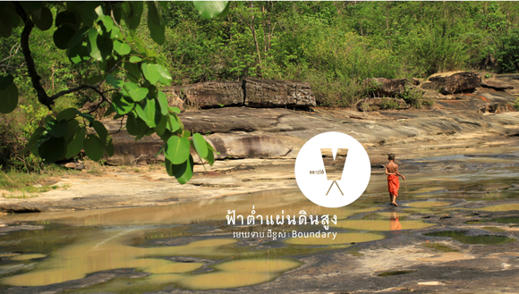
Screening in Budapest, Hungary, at Verzio International Human Rights Documentary Film Festival.
November 2013

In the main competition of the SalaMindanaw International Film Festival, Philippines.
November 2013
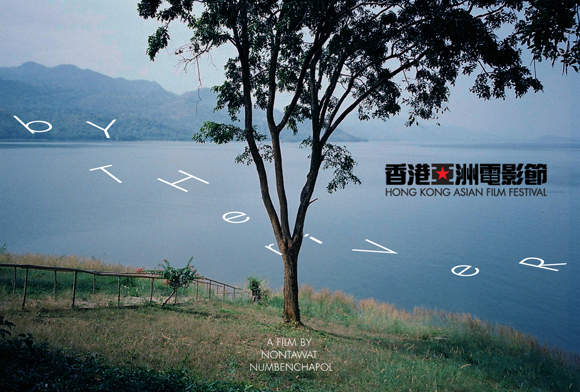
Competed for the New Talent Award at Hong Kong Asian Film Festival 2013 (HKAFF).
November 2013

At IDFA — International Documentary Film Festival Amsterdam, in the special programme Emerging Voices from Southeast Asia.
October 2013
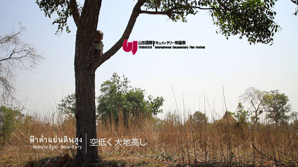
International Competition at Yamagata International Documentary Film Festival, Japan 2013.
September 2013

Screening at Milano Film Festival 2013.
August 2013


Received a Special Mention award at Locarno International Film Festival 2013.
August 2013

World premiere at Locarno International Film Festival 2013, Concorso Cineasti del Presente.
April 2013


Opening film at Salaya Doc, Thailand 2013.
February 2013

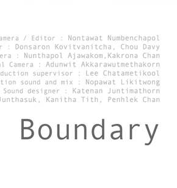
World premiere at Berlin International Film Festival 2013, Forum programme.
December 2012

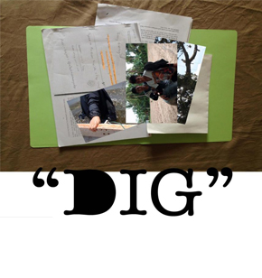
VDO installation & research materials of the forthcoming film “Boundary” by Nontawat Numbenchapol, at Messy, Bangkok, Thailand.
December 2012
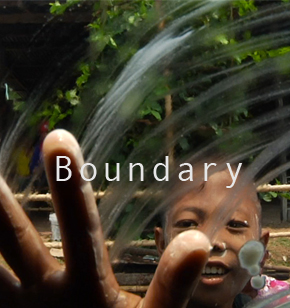
Participated in DocNet Campus through the support of DocNet Southeast Asia.
October 2012

Group Exhibition, Menam Art Fleuve, Ensapc Ygrec, Paris, France.
August 2012
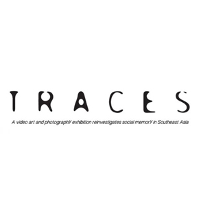

Screening and Talk by Nontawat Numbenchapol, Jim Thompson Art Center, Bangkok, Thailand.
March 2012
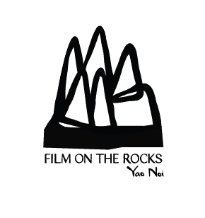

Film on the Rocks Untamed — Winner, Yaonoi Island, Thailand.
March 2012

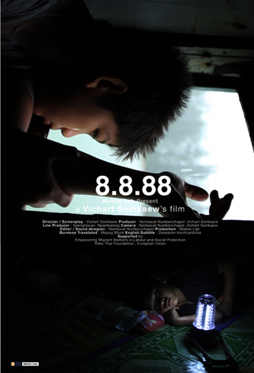
Selected to competition at Salaya International Film Festival, Thailand.
October 2011

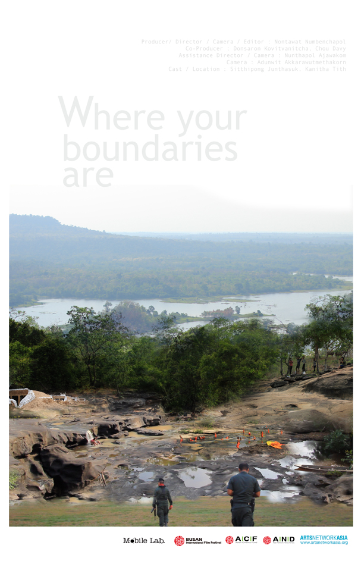
Selected by the DMZ Fund from Asian Network of Documentary, Busan International Film Festival and the DMZ International Documentary, Busan, Korea.
May 2011
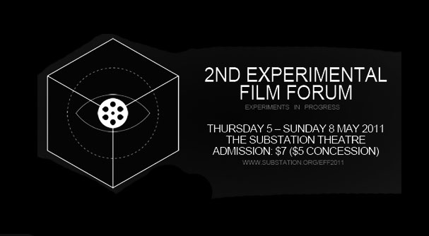

Screened at Experimental Film Forum 2011 (Singapore).
January 2011
Won an Arts Network Asia (ANA) 2011 Award.
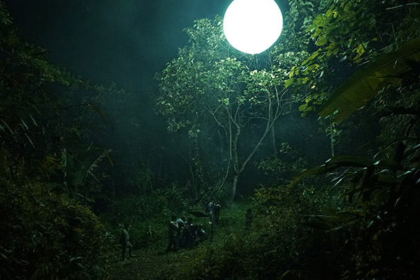
Mobile Lab Project experiments and researches on new ways of human visual and sound perception different from normal human perception. The project researches historical, social, and political information recorded over many generations until they became living belief systems. The project aims to change the perception of those beliefs via recording and expression onto visual and aural media. The purpose is to open the minds of people who receive communications from Mobile Lab, so that there is always the another side of established beliefs and new beliefs can rise up.
a Project by Nontawat Numbenchapol

A refugee builds a new identity as a sex worker in Thailand and gets caught up in a client’s risky scheme that might lead to a better life.
Director — Nontawat Numbenchapol Producer — Supatcha Thipsena, Steve Chen, Daniel Mattes, Davy Chou Cast — Awat Ratanapintha, Arak Amornsupasiri, Aelm Thavornsiri, Panisara Rikulsurakan, Ornjira Lamwilai Screenplay — Nontawat Numbenchapol Cinematography — Rimvydas Leipus Editor — Harin Paesongthai Music — Nannue Tipitier, Katenan Juntimathorn
Rising Star Award — Marie Claire Korea × BIFF 2023 SEAFIC Award Winner 2017 Special Mention Award, Talents Tokyo 2017 Next Master Support Program Development Fund, Talents Tokyo 2018
Busan Asian Project Market 2017 Talents Tokyo 2017 Luang Prabang Film Festival Talent Lab 2017 Ties That Bind 2017 Busan Asian Film School 2018 Berlinale Talents 2018 Berlinale Co-Production Market 2018 Cannes Atelier 2018 Thai Pitch at Cannes 2019 Busan International Film Festival (BIFF) 2023 — In Competition, Jiseok
Watch DOI BOY on Netflix ↗Official teaser — Vimeo ↗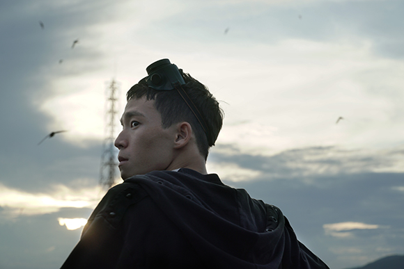
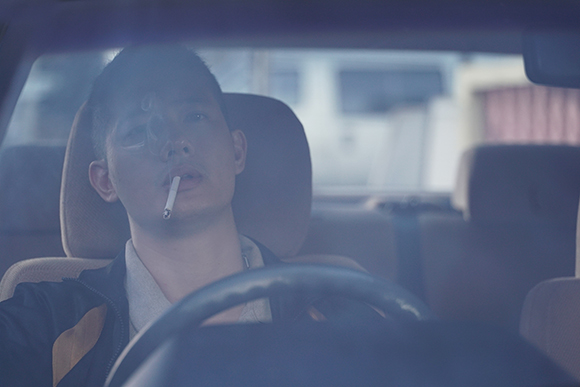
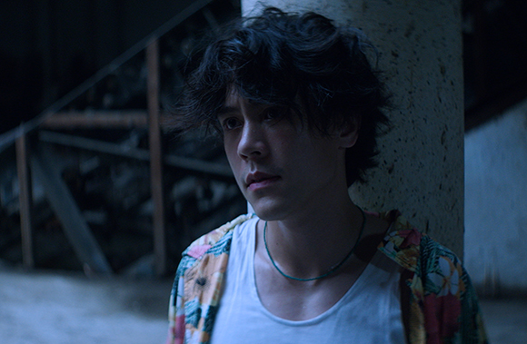
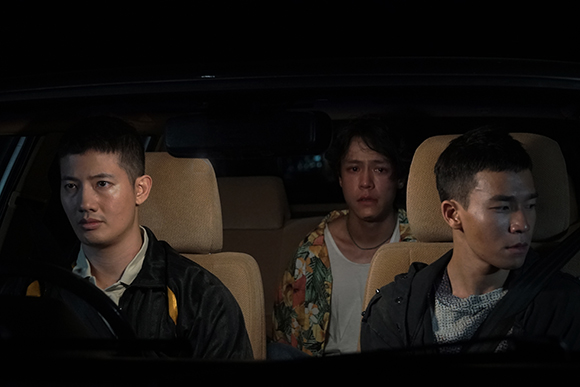
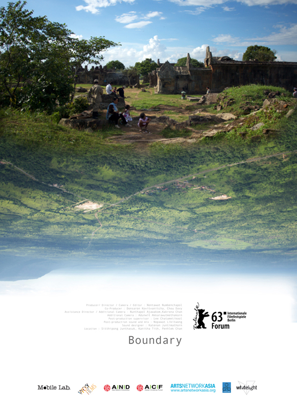
In the past decade, political conflict has shaken Thailand’s social and cultural structure. Recently created history, understood for more than half a century, is now questioned, and some traces of history are being re-interpreted. The connection of belief, society, culture and history of a country amazingly has an effect on a neighbouring country and the whole region.
In 2010, Nontawat worked as a still photographer on a Thai film production, where he met Aod, a 24-year-old workman from Sisaket province — which borders Cambodia and the famous Preah Vihear Temple. Aod had once been a soldier in Narathiwat, and in early 2010 was ordered to disperse the “Red Shirts” protesters in Bangkok, but was discharged before the decisive point. Aod’s life inspired Nontawat to make a new film.
In 2011, Nontawat went to Aod’s home in Sisaket with his own crew. At that time there were clashes between Thai and Cambodian soldiers over Preah Vihear Temple, while political conflict in Thailand between “Red Shirts” and “Yellow Shirts” made this ghost from the past arise. The journey of Nontawat in the boundary of the two countries had begun…
Boundary is the imaginary line we mark down to separate an area. I believe that people living around the border are the same group of people — they share the same culture, language and tradition, but through different political policy or many other reasons, a boundary was made to separate them. This film expresses my feeling toward “boundary” — not just territorial, but between social classes, between birth and death, between happiness and sorrow.
Producer / Director / Camera / Editor — Nontawat Numbenchapol Co-Producer — Donsaron Kovitvanitcha, Chou Davy Assistant Director / Additional Camera — Nunthapol Ajawakom, Kakrona Chan Additional Camera — Adunwit Akkarawutmethakorn Location — Sitthipong Junthasuk, Kanitha Tith, Penhlek Chan Post-production Supervisor — Lee Chatametikool Sound & Mix — Nopawat Likitwong Sound Designer — Katenan Juntimathorn
2014 — Young Director Award, Bangkok Critics Assembly Awards, Thailand
2014 — Human Rights Human Dignity IFF, Yangon 2014 — Seoul Independent Documentary Film & Video Festival 2013 — Cambodia International Film Festival 2013 — Festival Film Dokumenter, Yogyakarta 2013 — Luang Prabang Film Festival, Laos 2013 — Verzio International Human Rights Documentary FF, Budapest 2013 — IDFA, Amsterdam 2013 — Yamagata International Documentary FF, Japan 2013 — Milano Film Festival, Italy 2013 — Salaya International Documentary FF, Thailand 2013 — Berlin International Film Festival
Official trailer — Vimeo ↗Vimeo On Demand ↗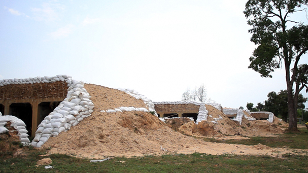
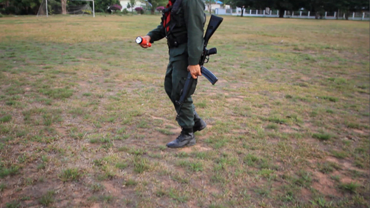
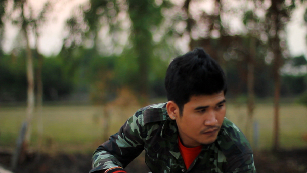
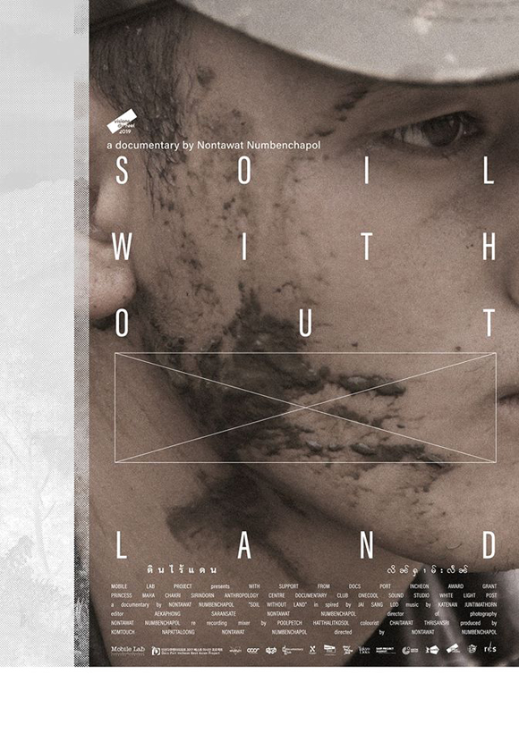
Set on the border of Myanmar and Northern Thailand, in a buffer zone in the Shan State where Shan refugees who have fled the ethnic war in Myanmar live — a self-governing region held by the Shan State Army with a mission to liberate the Shan people from Myanmar.
With a long history of war and prejudice between the two countries, the Thai government views Myanmar as a threat to its stability. As Myanmar transitions from military to democratic rule, Thailand goes from democracy to military rule. Stuck between these two unstable states, the Shan and other minorities continue to face violence and displacement. This is the story of a young man who, after barely escaping war, is forced back into a life of conflict and violence.
A documentary by Nontawat Numbenchapol Inspired by Jai Sang Lod Music — Katenan Juntimathorn Editor — Aekaphong Saransate, Nontawat Numbenchapol Director of Photography — Nontawat Numbenchapol Re-recording Mixer — Poolpetch Hatthalitkosol Colourist — Chaitawat Thrisansri Produced by — Komtouch Napattaloong, Nontawat Numbenchapol Co-produced by — John Badalu With support from Docs Port Incheon Award Grant, Princess Maha Chakri Sirindhorn Anthropology Centre, Documentary Club, OneCool Sound Studio, White Light Post
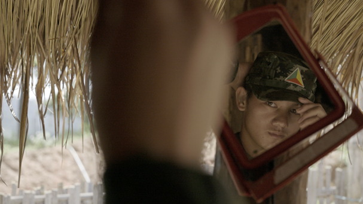
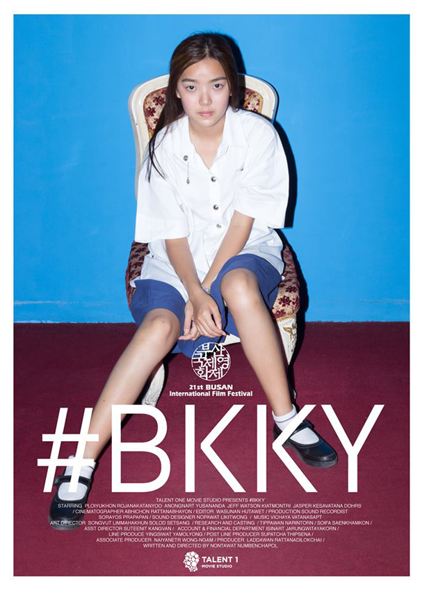
I started by interviewing 100 teenagers between 17–20 years old living in Bangkok. This period is the turning point of life — moving from high school to college. Regardless of different attitudes and experiences, teenagers’ love and dreams revolve around the same cliché, but in different contexts that cliché reveals different, individually meaningful outcomes.
Not only documenting a modern story of teenagers growing up in Bangkok, this film also reminds me of my own past and lets me document my own story — some parts similar, some different — including the first time I tried new things, like making a film.
The film is based on interviews of 100 Thai teenagers aged 17–19 with diverse gender identities, sharing their experiences, personal lives and attitudes toward social life in Bangkok. The common theme is their coming of age and confusion with dreams and love, while parenting is the major factor.
#BKKY is narrated through the interviews by creating a new character named JoJo, a 17-year-old girl who represents all the stories in the transition from 12th grade to university — the moment of many first experiences of life while trying to discover their true identities.
Director — Nontawat Numbenchapol Producer — Laddawan Rattanadilokchai Cast — Ploiyukhon Rojanakatanyoo, Anongnart Yusananda, Jeff Watson Kiatmontri, Kesavatana Dohrs Screenplay — Nontawat Numbenchapol Cinematography — Abhichon Rattanabhayon Art Director — Songvut Limmahakhun, Solod Charoensri Editor — Wasunan Hutawet, Nontawat Numbenchapol Sound — Nopawat Likitwong Music — Vichaya Vatanasapt Production Company — Talent1, Thailand World Sales — John Badalu, Indonesia
Official trailer (Busan version) — Vimeo ↗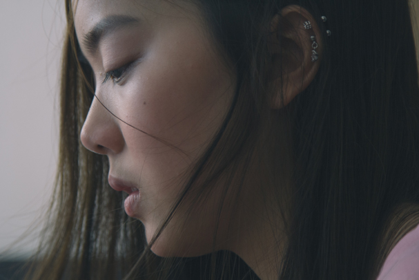
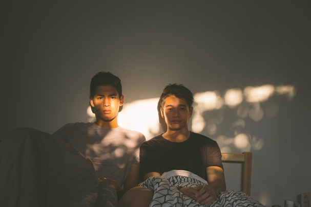
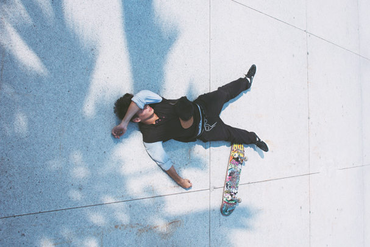
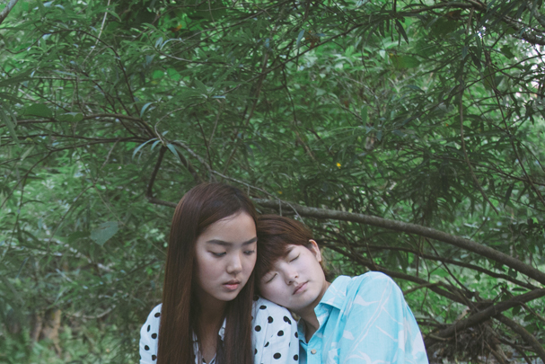
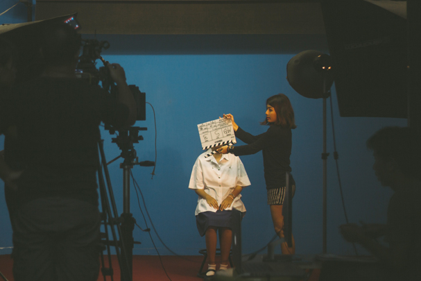

Amidst the tranquility of the deep woods, the inhabitants of Klity, in Kanchanaburi, Thailand, have always led a simple life, feeding on the fish of the town’s creek. But for some time now the river has been contaminated by a mineral-processing factory. A young local man dives every day to catch fish for his lover, but today he has gone missing, unable to return to her as she awaits.
Conflicts over the use of natural resources are not hard to find these days. Since 1998, tailings leaked from a mineral-processing plant in Thong Pha Phum, Kanchanaburi, raised lead contamination in Southern Klity’s creek above safe levels, immeasurably harming the ecosystem and the people. I decided to convey this perennial problem in the belief that such conflicts can be resolved if society and the organisations involved have awareness and good environmental management. If this film can inspire us to think about our own actions and to understand people who live with pollution without choices, I — as a documentary filmmaker — will be truly honoured.
2013 — Locarno International Film Festival, Cineasti del Presente — Special Mention Award
2014 — Human Rights Human Dignity IFF, Yangon 2014 — Green Film Festival in Seoul 2014 — ChopShots, Jakarta 2013 — Festival dei Popoli, Florence 2013 — Kolkata International Film Festival, India 2013 — SalaMindanaw International Film Festival, Philippines 2013 — World Film Festival, Bangkok 2013 — Hong Kong Asian Film Festival 2013 — Locarno International Film Festival
Official trailer — Vimeo ↗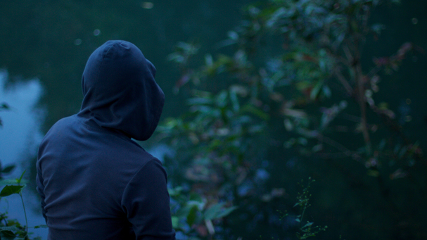
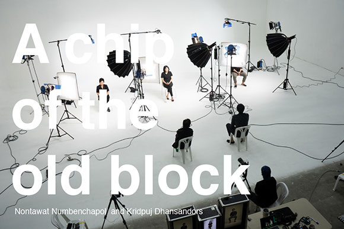
Since 2020, a new generation of Thais has arisen who bravely question and protest the deep structural inequalities of Thai society. Many have ended up charged with lèse-majesté — a heavy criminal offence under Thai law, and a tool of conservative judicial activism. Investigating its history, we found that the lèse-majesté law is directly connected to the 1960s Cold War context — a period that expanded and changed Thailand’s political actors drastically.
Through image and sound — the conversations and gestures of Kanya Theerawut, Sitanan Satsaksit, and Pranee Danwattananusorn — we simultaneously record three mothers’ conversations via three cameras, shot in black and white on a plain white studio background. The finalised videos are installed on flat-screen TVs on white walls. This is our way to explore, dismantle and challenge the legacies and leftovers of Thai crypto-colonialism.
Artist — Nontawat Numbenchapol, Kridpuj Dhansandors Director of Photography — Ittipun Promkaew Post Production — Pob Porthani, Kwanjuta Kumbunlue Subtitle — Ann Kaewta Still Photography — Withit Chanthamarit
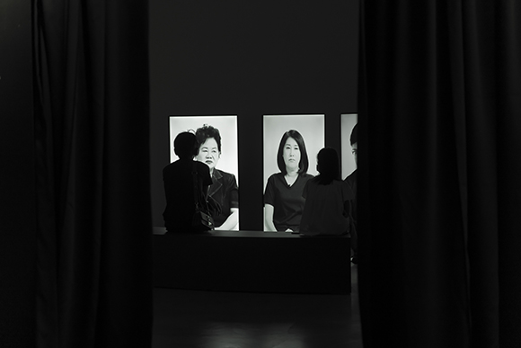
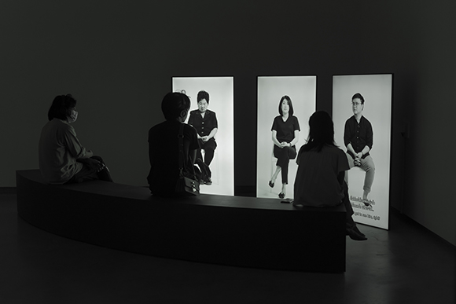
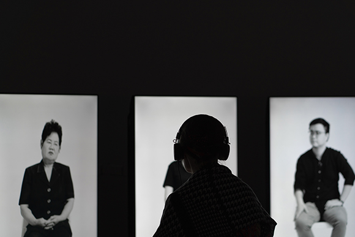
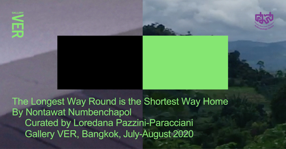
Nontawat Numbenchapol’s debut exhibition at Gallery VER, and his first-ever large-scale installation in an on-site gallery. Echoing the idiom that shortcuts are not always the best way, the work reflects on the complexities and precariousness of migratory life, often undertaken without legal documents. Crossing the border from Myanmar to Thailand manifests as an unsustainable choice; systematically marginalised, immigrants often have no options but limited freedom or a return to the homeland.
Focusing on Shan labourers in Chiang Mai, the ethnographic framework incorporates Numbenchapol’s observations and on-site research through unique footage shot inland in Myanmar, tracing a young man’s return after six years to his village in Shan State to visit his family and process his national identity documents.
Encompassing immersive video and sound installations, photography and mixed-media works, the exhibition facilitates dialogue on inclusion, exclusion and societal acceptance across Southeast Asian borders.
Loredana Pazzini-Paracciani is an independent curator, writer and lecturer of Southeast Asian contemporary art, whose practice revolves around critical socio-political issues in the region, advocating a counter-hegemonic, non-Western-centric discourse.
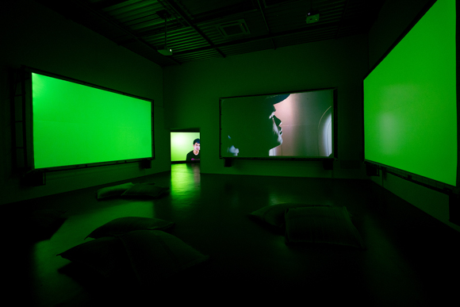
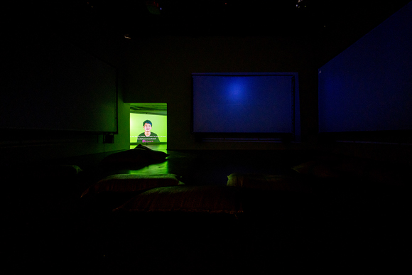
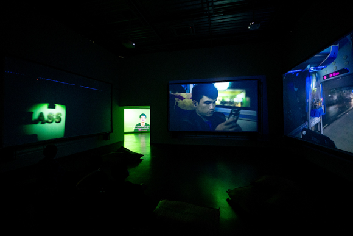
The photobook “In Process of Time” explores the process of time from past to present through on-site research documented as documentary photography by Nontawat Numbenchapol while researching his film script between 2016–2020.
The photography begins at Loi Kaw Wan, the borderland between Myanmar and Northern Thailand and a military base of the Shan State Army (SSA), then follows Shan national-day celebrations in Tachileik, and finally captures the Shan moving into Chiang Mai to live in their land of hope. Nontawat invites writers, academics and artists to explore the historical, social, political and cultural meanings behind the photographs.
Natcha Tantiwitayapitak · Yiamyut Sutthichaya · Somrit Luechai · Lalita Hanwong · Oradi Inkhong · Samak Kosem
Thai–English Translators — Jeff Moynihan, Philip Jablon Proofreading — Kanyanart Siripanya Photo Editor — Withit Chanthamarit Graphic Designer — Nattapol Rojjanarattanangkool Funded by the Princess Maha Chakri Sirindhorn Anthropology Centre
For international orders please contact vacilandobookshop@gmail.com
I often travel to Thailand’s borders, and often discover the inspiration to create in those places — a blend of cultures that exists between countries. The life I’ve seen there helps me reflect on my own and furthers my understanding of the diversity of life and what it means to be human.
As one of the most complicated and unstable wars in the world unfolds in Myanmar, the story of Shan refugees-turned-soldiers gives insight into a perpetual state of conflict and its suffocating effect on the innocent. It becomes an opportunity to document lives through a young stateless boy coming into adulthood — reflecting Myanmar’s transition from military to democratic state, alongside Thailand’s own transition from democratic to military state.

Thai filmmaker-artist Nontawat Numbenchapol opens his solo show “DIG”, presenting a video installation and research materials of his forthcoming film “Boundary”. The work features his research in Sri Saket, on the border of Thailand and Cambodia, at the time of the conflict over Preah Vihear.
In September 2010, during data collection at Roi Et in Northeastern Thailand, he met Aod — a 24-year-old workman hired by the film’s art crew to build the set. Aod had been a soldier in Narathiwat and, during the April Red Shirt protests, received orders to disperse the crowd. Their conversation, written in Khmer on the red soil, became the seed of the project.
Space 1/2 @ Messy Shop, Bangkok, Thailand
Ratchapruek (Cassia fistula), known as the golden shower tree, is a flowering plant native to southern Asia. It is the national tree of Thailand, and its flower is Thailand’s national flower.
Menam Art Fleuve — Ensapc Ygrec, Paris, France
AURORA is an atmospheric phenomenon found in nature. For centuries people perceived this light with appall and fright, until humans formed an explanation of its existence. Long ago the aurora was regarded as the recollection of the deceased — the breath that lasts eternally, spanning past, present and future.
AURORA PRIMARY explores “the foundation of birth, living and death; of past, present and future”, for which three primary colours — blue, yellow and red — stand. When the three colours overlap, a multitude of brand-new colours emerge. This piece is dedicated to the beloved who will shape the future.
Production — Fotr, New Panikbutr, Chaisiri Jiwarangsan Lighting Crew — Live 4 Viva English Subtitle — Ratchapoom Boonbunchachoke
Alongside collaborations with established artists and architects, we believe it is important to launch a platform for young filmmakers who joined us at the Lab. Given a brief to integrate a fish trap (“Sai”), inspired by the theme PRIMORDIAL and their memories of the island, the winner’s work was realised at Film on the Rocks Yao Noi 2012.
A video-art experiment and survey on human visual and sound perception and their influence on way of life, national integration, and belief in fact. The video changes usual perception by pairing a Thai ancient tale, read in a calm voice, with annoying visuals and sound.
Director — Nontawat Numbenchapol Script Writer — Donsaron Voice-over & Sound Recorder — Aimsinthu Ramasoot, Gunn Karalak Sound Design — Katenan Juntimathorn Moving Image & Poster Design — Jate Saitthiti
2014 — “A Brief History of Memory”, 4th Moscow International Biennale for Young Art, Strategic Projects 2014 — “Chapter 3, State of Being — New Video Art from Thailand”, XXX Gallery, Hong Kong 2011 — Experimental Film Forum, Singapore 2010 — Doi Saket International Film Festival, Thailand
The queer Australian singer-songwriter’s words — “I really fall in love with the person; I don’t care whether someone’s got a ding or a dong” — provided the title for this Thai-German theatre project. Based on interviews the journalist Jürgen Berger conducted with trans* people in Thailand and Germany between 2017 and 2022, the production explores the gap in society these people inhabit in both countries.
“I Don’t Care” tells of trans* ways of life that take convoluted yet direct paths toward their felt gender, struggling with prejudice in both countries. For this production by Jarunun Phantachat and German director Anna-Elisabeth Frick, video artist Nontawat Numbenchapol evolved an entirely individual visual language. Thai performers Pathavee Thepkraiwan and Sarut Komalittipong appear with Mareike Beykirch of the Residenztheater ensemble.
Direction, Stage Design & Choreography — Anna-Elisabeth Frick, Jarunun Phantachat Video — Nontawat Numbenchapol Costume Design — Nicha Puranasamriddhi Music — Matthias Breitenbach Lighting — Barbara Westernach Dramaturgy — Jürgen Berger, Almut Wagner
A lecture performance by Dr. Charnvit Kasetsiri, a renowned historian and specialist in Southeast Asian studies. Charnvit draws a connection between his relationship with the Japanese army in his hometown Nong Pla Duk, Ban Pong, during World War II. In 1964, Crown Prince Akihito and his consort officially visited Thailand and, as a junior member of the Bangkok Municipality welcome team, Charnvit was given a royal sake cup he has kept ever since.
He traces personal and micro-narratives to reflect objects and memories, and his witnessing of global social transformation — from the Japanese presence in Thailand, to the Vietnam War, to the 1970s student uprising — juxtaposing Thai and Japanese history. Co-directed by Teerawat “Ka-ge” Mulvilai (performance / stage), Nontawat Numbenchapol and Anan Krudphet (video, moving images); produced by Gridthiya Gaweewong.
THB 4,500 · Edition of 30
Archival pigment print on Hahnemühle cotton paper, 42 × 59.4 cm (A2). Signed and numbered by Nontawat Numbenchapol. Each print ships rolled in a protective tube. To order or ask about international shipping, use the form below.

Email : nontawat@mobilelabproject.com